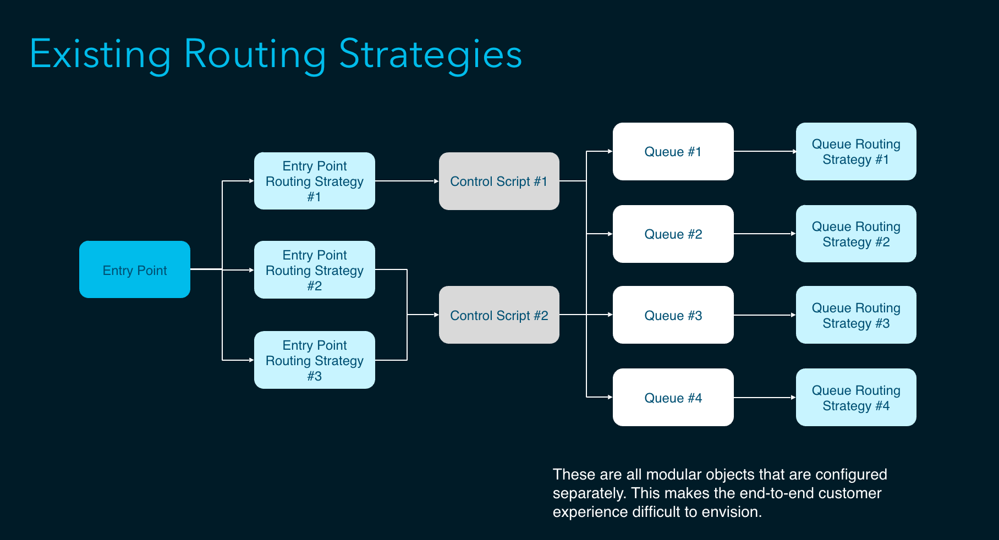

For any Contact Center, one of the most critical tools required to ensure smooth functioning of the organization is the routing logic builder which the administrator or developer will use to define the customer's experience and the flow logic that will result in the best possible experience for the customers. For eg. Sending the customerrs to the appropriate team of agents which could besst handle their request. A typical example that everyone faces is the IVR experience which asks us to select a number from thee dialpad to route us to an agent.
Flow Designer is a visual scripting tool that allows users to build any type of automated experience forr Contact Center use-cases. Think of it as the pre-frontal cortex of the contact center’s brain. It enables robotic process automation by receiving events, making a determination of what to do next, and orchestrating it. We needed to build out a new tool to replace the existing scripting tool, which was lacking in several aspects and required a lot of support from our Professional Services team to enable building flows and scripts which should otherwise be possible.

We primarily had two strategic goals. The current approach for setting up routing strategies was super complicated and split up into types- Entry Point Routing Strategies and Queue Routing Strategies. We wanted to simplify that model to facilitate an easy mechanism of creating routing strategies through a single end-to-end unified flow. The othe goal was to have Flow Designer as the single go to tool for enabling the creation of any kind of logic driven flows based on events. This would lead to the grander vision of achieveing the status of a truly programmatic contact center.
At a high level, this is what the process has looked like so far:
1. Identification of critical use cases to pursue after we achieve feature parity.
2. Collection of custom flows commonly being requested from Professional Services.
3. Identification of pain-points of existing users (e.g. not being able to copy flows, share flows across customers, normalize flow experience across channels, etc.)

This remains one of the most complicated projects i have ever worked on. Since this falls heavily in the realm of programmatic experiences, I needed to learn about programmatic constructs like HTTP Request Methods. This also involved designing from a platform mentality as the flow Designer tool would be used to build upon by other internal teams and hence we had to design keeping that in mind.